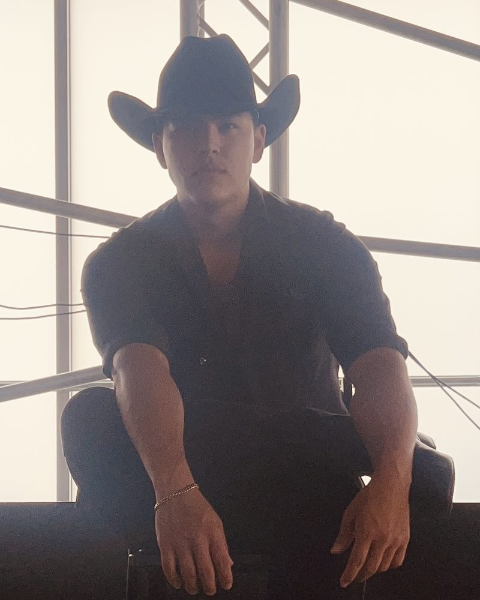

See It in Action
A little country-western, from the social floor to the competition stage.


As Featured In

Hi, I'm Nolan Wayne, a professional dancer and instructor based in Austin. I've been dancing for 16+ years, competing and coaching. Most of that has been partner dancing: Ballroom (both International and American), Country, and West Coast Swing. I started in musical theatre when I was younger, competed in Ballroom in college, and I'm now Master-qualified on the United Country Western Dance Council circuit. Lately I've been social dancing and competing in West Coast Swing. I've also danced in local charity events like Dancing with the Stars Austin, a Center for Child Protection fundraiser that raises close to $3 million a year for kids in need.
The students I love teaching most are the ones who walk in convinced they have no rhythm at all. If you've never taken a lesson, never had a partner, or just always wanted to learn, you're in the right place. I keep things relaxed and work at your pace, and break everything down into simple steps. I think dancing should be fun, so my main focus is making sure you have a great time.
I teach all of my students with patience and zero judgment, regardless of gender or orientation. Come as you are, and let's get you moving.
Let's TalkPick one, or tell me what you want to learn and we'll figure it out. Most students start with no experience.
Waltz, Foxtrot, Rumba, Cha Cha, and more. A good place to start if you've never danced. We build the fundamentals one step at a time.
Two-step, country waltz, and Texas dance-hall basics. Good for first-timers. I competed in country-western at the top levels, so I can work with experienced social dancers too.
Smooth, slotted swing danced to pop and R&B. Once you have the basics it's mostly improvised, so you can dance it with anyone on a social floor.
A little country-western, from the social floor to the competition stage.
Three steps from "I can't dance" to dancing
Tell me what you'd like to learn and where you're starting from. Most students start at zero. We pick a style and a goal from there.
We work at your pace and break every move down. You'll leave each lesson with practice videos.
Before long you're dancing without counting in your head, ready for a night out or a social floor.
From first lessons to the social floor
"Could barely keep a beat when I started. A few lessons in and I'm two-stepping no problem. Nolan never made me feel dumb for messing up."
"I had wanted to learn for years but kept talking myself out of it. I am so glad I finally reached out. Every lesson is relaxed and encouraging, and I genuinely look forward to them all week. Thank you for making it so easy to begin."
"Already danced country socially and wanted to get better. Nolan competed at a high level and it shows. He cleaned up my technique and it's still a good time. Highly recommend."
"Took swing lessons together just for fun. We laughed the whole time and somehow actually learned to dance. Great for total beginners."
"Could barely keep a beat before, now it's easy. Loved working with Nolan."
"Never danced a step before. A few months in and I'm the one pulling people onto the floor at weddings. Really patient teacher and it never feels like work."
"honestly the most fun hour of my week."
"My girlfriend dragged me to a first lesson and I figured I'd hate it. Now it's the highlight of my week. Nolan's super laid back about the whole thing."
"Zero judgment, all fun. Exactly what I needed."
"I'm in my 60s and had convinced myself I'd missed my chance to ever learn to dance. Nolan proved me wrong. He comes right to my house, is endlessly patient, and I leave every single lesson in a better mood than I arrived. I truly cannot thank him enough."
"We do date-night lessons now and it's the best thing we've added to our week. Great if you want something to do together besides dinner and a movie."
"I get anxious in groups so we do my lessons over video from my living room. Figured it'd be awkward and it really wasn't. Wish I'd started sooner."
"honestly cannot believe i waited this long to try. so glad i finally did."
"Booked a few lessons before a friend's wedding so I wouldn't look lost. Ended up dancing all night. Nolan gives you just enough to feel good out there."
I'd love to hear how it went. I read every one, and if you're okay with it I might add your words here.
Everything you need to know before your first lesson
More than okay, it's most of my work. Most of my students start with zero experience. I break every move down and we go at your pace. You don't need rhythm or any background to start.
Nope! I teach plenty of solo students, and you can learn to lead or follow without bringing anyone along. If you do have a partner you'd like to learn with, that's great too. Either way works.
Whichever one you like the sound of. Country two-step is an easy start here in Texas. Ballroom if you want something classic. West Coast Swing if you want something for social nights. Not sure? Tell me what music you listen to and I'll suggest one.
Yes, especially country-western, where I competed at the top levels. I can clean up your technique, add to your moves, and work on styling. Same for West Coast Swing and ballroom at an intermediate level.
It depends on your goals. A few lessons are enough to get comfortable with the basics of a style, while ongoing weekly lessons are great if you want to keep growing. There's no required package. We'll figure out a rhythm that fits your goals and budget.
Your choice: in-home (I come to you), at a partner studio across Austin with professional floors and mirrors, or virtually over video if you're not local. Whatever's most comfortable and convenient for you.
Simple, flexible pricing. Book a single lesson to try it out, or keep them going as long as you're having fun.
Lessons starting at
I come to you. Learn in the comfort and privacy of your own space.
Professional floors and mirrors at partner studios across Austin.
Not local? No problem. I've taught students from around the world via video.
Curious but nervous? That's normal, and it's most of my students. Tell me what you'd like to learn and we'll plan a first lesson.
Get StartedReady for a first lesson, or just have questions? Tell me what you'd like to learn and where you're starting from. Beginners are most of my students.
Based in Austin, TX. Available worldwide via virtual lessons.
Response time: I typically respond within 24 hours.